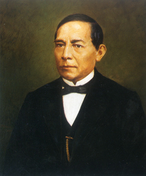

Origenes y cultura
Oaxaca ha sido el hogar de grandes civilizaciones como los zapotecas y mixtecas su historia esta llena de tradicciones artes y resistencia cultural

Epoca Colonial
Durante la colonización española, Oaxaca se convirtió en un importante centro cultural y religioso. La construcción de iglesias y conventos marcó la ciudad.

Personajes Historicos
Oaxaca es cuna de grandes personajes como Benito Juárez, presidente de México, y Porfirio Díaz.
